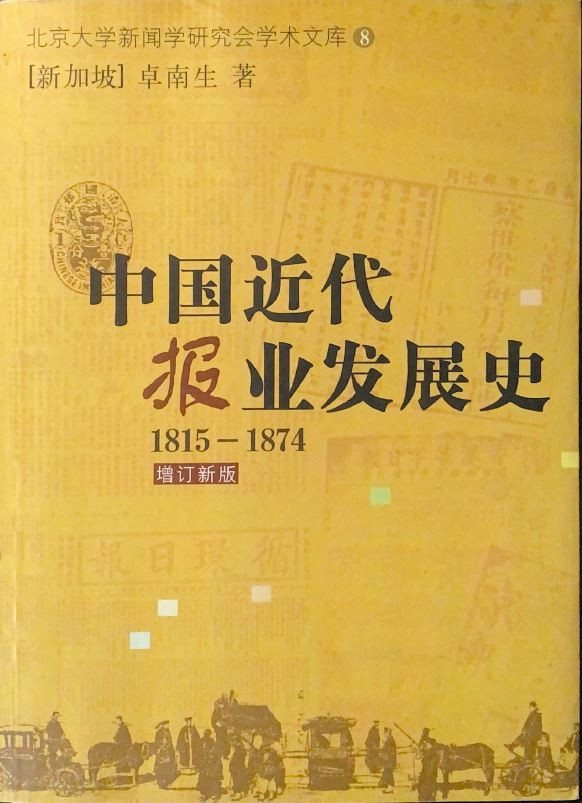
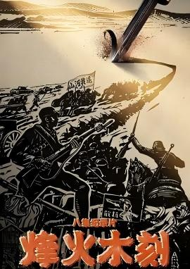

第一课堂：线上学习资料
教材推荐
《中国新闻传播史》（第4版）
中国人民大学出版社
中国人民大学出版社
《中国新闻传播史》
高等教育出版社
高等教育出版社

《中国近代报业发展史》
中国社会科学出版社
中国社会科学出版社
主要报刊数据库
- 中国国家数字图书馆（https://www.nlc.cn/web/index.shtml）
- 国家图书馆·民国期刊/报纸数据库（http://mylib.nlc.cn/web/guest/minguoqikan）
- 中国历史文献总库·近代报纸数据库（请通过重庆大学图书馆访问）
- 中国历史文献总库·红色文献数据库（请通过重庆大学图书馆访问）
- 晚清民国期刊全文数据库（请通过重庆大学图书馆访问）
- 大成老旧刊全文数据库（请通过重庆大学图书馆访问）
- 全国报刊索引（http://www.cnbksy.cn/home）（请通过重庆大学图书馆访问）
- 爱如生晚清民国大报库（请通过重庆大学图书馆访问）
- 《人民日报》图文数据库（请通过重庆大学图书馆访问）
- 民国文献大全（需接入校园VPN，通过重庆大学图书馆访问）
- 《大公报》全文检索数据库（http://tk.dhcdb.com.tw/tknewsc/tknewskm）
- 瀚堂近代报刊数据库（http://www.neohytung.com/Main.aspx）
网络课程观摩
教学影片
《一份报纸的抗战》（大公报）

《烽火木刻》第六集《凝望》
《觉醒年代》
《川盐抗战》（新华日报）
《抗日战场上的办报人》